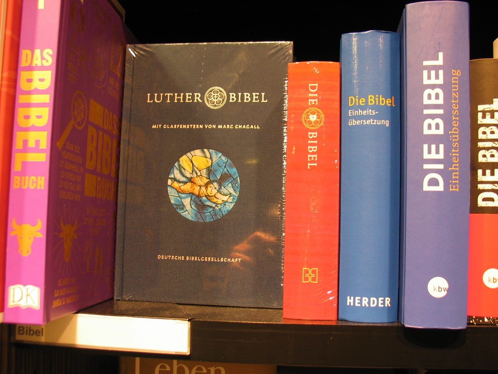

Kapitel 11 – De religiøse billeder
Akut livstruende sygdom kaster Nolde ud i en eksistentiel krise, som bliver udløseren for en række malerier med religiøse motiver. Motiverne er så anderledes malet end konventionelle religiøse malerier, at de vækker både uforbeholden begejstring og sønderlemmende afvisning.